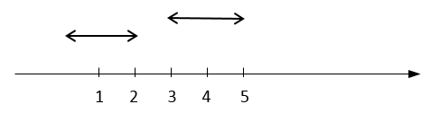

DOANP - Đoạn phủ
Giới hạn thời gian: 1.0 giây
Giới hạn bộ nhớ: 128 megabyte
Trên trục số cho n đoạn thẳng [si, di], si là điểm đầu và di là điểm cuối (si < di với 1 ≤ i ≤ n) . Cần chọn ra một số đoạn để phủ hoàn toàn đoạn [a, b]. Hỏi số đoạn cần chọn ít nhất là bao nhiêu.
Dữ liệu nhập: gồm các dòng sau
- Dòng thứ nhất là 3 số nguyên n, a, b cách nhau một khoảng trắng (1 ≤ n ≤ 105, 0 ≤ a < b ≤ 109)
- Trong n dòng tiếp theo, dòng thứ i là hai số nguyên si, di cách nhau một khoảng trắng (0 ≤ si < di ≤ 109)
Dữ liệu xuất:
- Nếu có cách chọn các đoạn phủ, in ra số nguyên m là số lượng đoạn ít nhất. Trong dòng tiếp theo in ra m số nguyên là chỉ số của các đoạn được chọn, mỗi số cách nhau một khoảng trắng. Nếu có nhiều cách chọn, in ra một cách bất kỳ.
- Nếu không có cách chọn để phủ hết, in ra -1.
Ví dụ
-
input3 1 5
1 3
2 4
3 5output2
1 3 -
input2 1 5
0 2
3 5output-1
Test 1:

Test 2:
